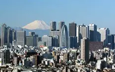

Have you ever thought about living in or visiting Japan?

You can visit Japan for many reasons:
Firstly, you can visit Japan as a visitor where you can explore:

Tokyo
1. Tokyo's food — a culinary revelation
Tokyo is one of the greatest cities for food lovers.
It has many famous restaurants, amazing street food,
and traditional Japanese meals.
2. Beyond the familiar
Tokyo combines modern technology with traditional culture.
The city lights, trains, temples,
and anime atmosphere make the experience unforgettable.
3. Hidden affordability
Although many people think Japan is expensive,
Tokyo actually offers many affordable places,
activities, and delicious meals for visitors.
Hakone
1. Relaxing hot springs
Hakone is famous for its beautiful hot springs
and relaxing atmosphere.
2. Amazing nature views
The city is surrounded by mountains,
forests, and lakes.
3. A peaceful escape from Tokyo
Hakone is calm and perfect for relaxing vacations.
Finally, you can work in Japan and build your future career:
Working
1. Advanced technology companies
Japan is home to many global technology
and engineering companies.
2. Professional work environment
Japanese workplaces are known for discipline,
teamwork, and organization.
3. Career growth
Working in Japan can provide international experience
and improve professional skills.